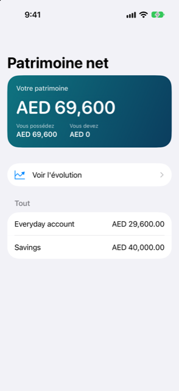
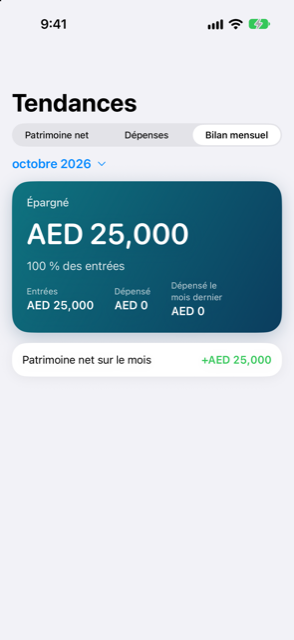

Guide › Aperçu
Tendances et patrimoine net
Le patrimoine net du jour et dans le temps, les dépenses mois contre mois, la revue du mois.
Analyses a deux écrans pour la vue longue. Patrimoine net montre tout ce que vous possédez moins tout ce que vous devez, aujourd'hui, dans votre devise principale. Tendances dessine le patrimoine net dans le temps, les dépenses mois contre mois, et la revue d'un mois.


Quand l'utiliser
- Vous voulez un seul chiffre pour ce que vous valez, avec les pièces qui le composent.
- Vous voulez voir si ce chiffre monte ou descend d'un mois à l'autre.
- Vous voulez comparer les dépenses de ce mois avec le mois dernier, catégorie par catégorie.
- À la fin d'un mois, vous voulez regarder ce qui est entré, ce qui est sorti et ce qui a été épargné.
Patrimoine net
Ouvrez l'onglet Analyses et touchez Patrimoine net. La ligne sur l'écran Analyses montre déjà le chiffre, avec ce que vous possédez et ce que vous devez.
- La carte du haut montre Votre patrimoine, avec Vous possédez et Vous devez à côté.
- En dessous se trouve la ligne Voir l'évolution, qui ouvre Tendances sur son onglet Patrimoine net.
- Si vous devez encore de l'argent sur des achats échelonnés, ils sont listés sous Promis, pas encore payé, chacun avec son échéance. Une ligne Après ces engagements les suit, montrant ce que serait le patrimoine net une fois qu'ils seraient payés. Ils ne sont pas comptés comme des dettes dans le chiffre du haut.
- La section Tout liste vos comptes, placements, actifs et dettes, chacun avec son montant dans votre devise principale, ou dans sa propre devise quand il n'y a pas encore de taux pour lui. Un placement montre sa valorisation comme un nombre d'unités fois une valeur unitaire, avec la date de référence. Il montre « · pas à jour » quand la valeur est périmée.
Le patrimoine net compte les investissements et les autres actifs à la valeur que vous leur avez donnée, pas seulement à ce que vous avez payé. Un élément qui a besoin d'un taux que vous n'avez pas fixé est marqué « Il faut un taux de change pour », avec la devise nommée. Un élément dont le remboursement est peu probable est laissé de côté, avec la ligne « Exclu : remboursement peu probable ».
Tendances
Touchez Tendances sur l'écran Analyses — il s'ouvre sur l'onglet Revue du mois. Choisissez l'un des trois onglets en haut.
Patrimoine net
Un graphique du patrimoine net à la fin de chaque mois, qui se termine par un point pour aujourd'hui. Il est dessiné à partir de vos transactions enregistrées et des valeurs que vous avez données aux placements, donc il bouge quand vous enregistrez quelque chose ou mettez à jour une valeur, et pas tout seul. Une carte en haut donne le dernier chiffre et son évolution depuis le premier point, avec une date. Avec moins de deux fins de mois à montrer, l'écran dit Pas encore assez d’historique.
Dépenses
Un graphique en barres des dépenses par mois, avec les cinq plus grosses catégories sur ces mois colorées et le reste regroupé en Autre. Jusqu'à six mois sont montrés côte à côte. Le dernier mois est le mois en cours, donc ses chiffres ne couvrent que les jours passés. En dessous, Ce mois par rapport au précédent liste jusqu'à huit des plus grosses catégories avec ce qui a changé : une flèche et un montant, et un pourcentage quand il peut être calculé. Une catégorie qui n'avait rien le mois dernier dit Nouveau ce mois-ci. Les changements portent à la fois une flèche de signe et une couleur, donc vous pouvez lire la direction de l'une ou l'autre façon.
Revue du mois
La revue d'un mois — d'abord le dernier mois complet, ou n'importe lequel des mois du menu en haut. Chaque partie n'apparaît que s'il y a quelque chose à montrer :
- Une carte Épargné, ou Épargné jusqu’ici pour le mois en cours : ce qui est entré moins ce qui a été dépensé, et en part de ce qui est entré quand quelque chose est entré.
- Entrées, Dépensé et, quand il y a un mois plus ancien, Dépensé le mois dernier à côté.
- Où c’est parti : les plus grosses catégories du mois avec leur changement par rapport au mois d'avant.
- Plus grosses dépenses : les trois plus gros paiements uniques du mois, avec des dates.
- Patrimoine net sur le mois : comment votre patrimoine net a bougé pendant qu'il durait.
Bon à savoir
- Tous les chiffres sont dans votre devise principale, convertis avec les taux enregistrés. Un montant sans taux est exclu des totaux jusqu'à ce que vous en fixiez un.
- Tendances montre au plus six mois de dépenses mois par mois ; le graphique du patrimoine net remonte plus loin, un point par fin de mois.
- La liste des plus grosses dépenses ne compte que les entrées confirmées, et laisse de côté les ajustements de rapprochement, pour qu'une correction faite seulement pour coller à un relevé n'évince pas de vraies dépenses.
- Ces écrans donnent des informations sur votre propre historique. Ce sont des estimations et des relevés, pas des conseils financiers.
À voir aussi
Quelque chose n’est pas clair ou manque ? Écrivez à support@raveniq.ai en indiquant la page.